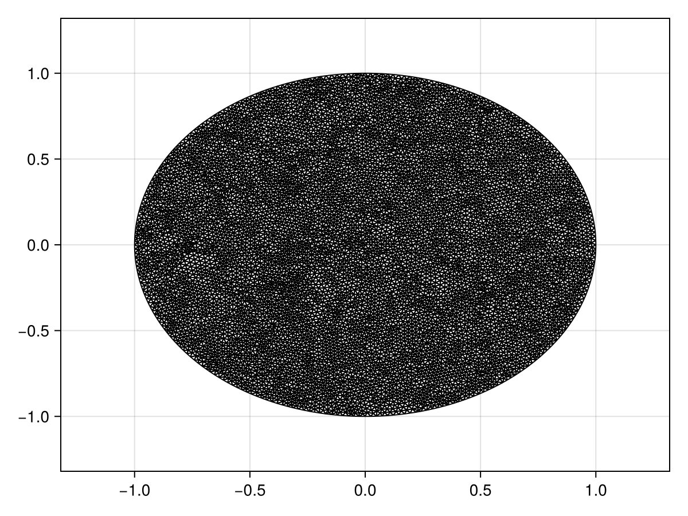
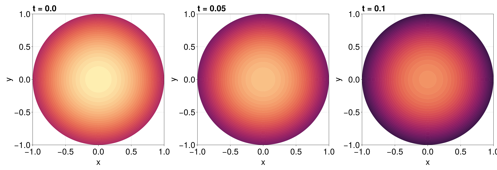

Reaction-Diffusion Equation with a Time-dependent Dirichlet Boundary Condition on a Disk
In this tutorial, we consider a reaction-diffusion equation on a disk with a boundary condition of the form $\mathrm du/\mathrm dt = u$:
\[\begin{equation*} \begin{aligned} \pdv{u(r, \theta, t)}{t} &= \div[u\grad u] + u(1-u) & 0<r<1,\,0<\theta<2\pi,\\[6pt] \dv{u(1, \theta, t)}{t} &= u(1,\theta,t) & 0<\theta<2\pi,\,t>0,\\[6pt] u(r,\theta,0) &= \sqrt{I_0(\sqrt{2}r)} & 0<r<1,\,0<\theta<2\pi, \end{aligned} \end{equation*}\]
where $I_0$ is the modified Bessel function of the first kind of order zero. For this problem the diffusion function is $D(\vb x, t, u) = u$ and the source function is $R(\vb x, t, u) = u(1-u)$, or equivalently the force function is
\[\vb q(\vb x, t, \alpha,\beta,\gamma) = \left(-\alpha(\alpha x + \beta y + \gamma), -\beta(\alpha x + \beta y + \gamma)\right)^{\mkern-1.5mu\mathsf{T}}.\]
As usual, we start by generating the mesh.
using FiniteVolumeMethod, DelaunayTriangulation, ElasticArrays
r = 1.0
circle = CircularArc((0.0, r), (0.0, r), (0.0, 0.0))
points = NTuple{2, Float64}[]
boundary_nodes = [circle]
tri = triangulate(points; boundary_nodes)
A = get_area(tri)
refine!(tri; max_area = 1e-4A)
mesh = FVMGeometry(tri)FVMGeometry with 8887 control volumes, 17516 triangles, and 26402 edgesusing CairoMakie
triplot(tri)
Now we define the boundary conditions and the PDE.
using Bessels
BCs = BoundaryConditions(mesh, (x, y, t, u, p) -> u, Dudt)BoundaryConditions with 1 boundary condition with type Dudtf = (x, y) -> sqrt(besseli(0.0, sqrt(2) * sqrt(x^2 + y^2)))
D = (x, y, t, u, p) -> u
R = (x, y, t, u, p) -> u * (1 - u)
initial_condition = [f(x, y) for (x, y) in DelaunayTriangulation.each_point(tri)]
final_time = 0.10
prob = FVMProblem(mesh, BCs;
diffusion_function = D,
source_function = R,
final_time,
initial_condition)FVMProblem with 8887 nodes and time span (0.0, 0.1)We can now solve.
using OrdinaryDiffEq, LinearSolve
alg = FBDF(linsolve = UMFPACKFactorization(), autodiff = AutoFiniteDiff())
sol = solve(prob, alg, saveat = 0.01)retcode: Success
Interpolation: 1st order linear
t: 11-element Vector{Float64}:
0.0
0.01
0.02
0.03
0.04
0.05
0.06
0.07
0.08
0.09
0.1
u: 11-element Vector{Vector{Float64}}:
[1.2514323512504983, 1.2514323512504983, 1.2514323512504983, 1.2514323512504983, 1.2514323512504983, 1.2514323512504983, 1.2514323512504983, 1.2514323512504983, 1.0, 1.0732643239064652 … 1.1817426551410464, 1.0003770920532977, 1.0596386178745882, 1.0326592531262782, 1.1510620468678054, 1.1438696675352222, 1.153308120626549, 1.1485925080430508, 1.1571727588256662, 1.1879947255919334]
[1.2640096976965525, 1.2640096976965525, 1.2640096976965525, 1.2640096976965525, 1.2640096976965525, 1.2640096976965525, 1.2640096976965525, 1.2640096976965525, 1.0100437172888128, 1.0840413732887568 … 1.1936322568342266, 1.0104265740838254, 1.070299162535625, 1.0430413186419554, 1.1626487068648088, 1.1553659988499063, 1.1649163117678447, 1.1601367313446949, 1.1688050927493665, 1.199942237509203]
[1.2767142290552143, 1.2767142290552143, 1.2767142290552143, 1.2767142290552143, 1.2767142290552143, 1.2767142290552143, 1.2767142290552143, 1.2767142290552143, 1.020195564934148, 1.0949376539756615 … 1.2056323995096438, 1.020582827277738, 1.0810587779567506, 1.0535261819050228, 1.1743382948824002, 1.166980488601925, 1.1766277640654994, 1.1717992208935677, 1.1805551001541947, 1.2120058204124748]
[1.2895472539418418, 1.2895472539418418, 1.2895472539418418, 1.2895472539418418, 1.2895472539418418, 1.2895472539418418, 1.2895472539418418, 1.2895472539418418, 1.0304519043591118, 1.1059453524998413 … 1.2177518019506481, 1.0308424103376497, 1.091925613449461, 1.0641166206732977, 1.1861420082621044, 1.178712015516124, 1.1884545993657551, 1.1835790276041518, 1.1924225369304393, 1.22418906603898]
[1.3025085751488137, 1.3025085751488137, 1.3025085751488137, 1.3025085751488137, 1.3025085751488137, 1.3025085751488137, 1.3025085751488137, 1.3025085751488137, 1.0408123379640508, 1.1170647186644571 … 1.2299902423186388, 1.0412043755916507, 1.1028995022213839, 1.0748125230310077, 1.1980617217013587, 1.1905599360246624, 1.2003975381760668, 1.1954768441864734, 1.204406783688064, 1.236492210490313]
[1.3156008220330764, 1.3156008220330764, 1.3156008220330764, 1.3156008220330764, 1.3156008220330764, 1.3156008220330764, 1.3156008220330764, 1.3156008220330764, 1.0512772276485132, 1.1282968348710005 … 1.242351754852906, 1.0516703015691835, 1.113984140539177, 1.0856164848968204, 1.2101034198210754, 1.2025268201235666, 1.2124616981961658, 1.2074954399151898, 1.2165113586594307, 1.2489195675878424]
[1.3288250657663963, 1.3288250657663963, 1.3288250657663963, 1.3288250657663963, 1.3288250657663963, 1.3288250657663963, 1.3288250657663963, 1.3288250657663963, 1.061846720846488, 1.1396421420782101 … 1.2548379830591836, 1.0622408313461826, 1.1251810342221582, 1.0965295638201045, 1.2222695406915016, 1.2146137148016005, 1.2246491643219282, 1.219635942963039, 1.2287376951345965, 1.2614728947360367]
[1.3421824379271197, 1.3421824379271197, 1.3421824379271197, 1.3421824379271197, 1.3421824379271197, 1.3421824379271197, 1.3421824379271197, 1.3421824379271197, 1.0725209733062067, 1.1511011061118048 … 1.2674506631254137, 1.072916644263557, 1.1364917740073017, 1.107552876988604, 1.234562659872964, 1.2268217260903576, 1.236962139022748, 1.2318995451237955, 1.2410873072311353, 1.2741540484446625]
[1.3556742069631986, 1.3556742069631986, 1.3556742069631986, 1.3556742069631986, 1.3556742069631986, 1.3556742069631986, 1.3556742069631986, 1.3556742069631986, 1.083300159614365, 1.1626742491412683 … 1.2801917412394548, 1.0836985018316234, 1.147918143038536, 1.1186876767190572, 1.2469856644516564, 1.2391520938010405, 1.249403091166822, 1.2442875823441717, 1.253561892206104, 1.2869651097768822]
[1.3693016413225834, 1.3693016413225834, 1.3693016413225834, 1.3693016413225834, 1.3693016413225834, 1.3693016413225834, 1.3693016413225834, 1.3693016413225834, 1.0941844543576587, 1.1743620933360823 … 1.2930631635891634, 1.0945871655606985, 1.1594619244597872, 1.1299352153282025, 1.2595414415137711, 1.25160605774485, 1.2619744896223455, 1.256801390570879, 1.2661631473165602, 1.2999081597958562]
[1.3830651157576273, 1.3830651157576273, 1.3830651157576273, 1.3830651157576273, 1.3830651157576273, 1.3830651157576273, 1.3830651157576273, 1.3830651157576273, 1.1051885456097605, 1.1861641379475183 … 1.306051928204879, 1.1056054616558428, 1.1711137969048735, 1.1412900237131691, 1.2721571651450598, 1.2641957122830019, 1.2746374630449606, 1.2694193309182, 1.2788960360219948, 1.3129590075017379]fig = Figure(fontsize = 38)
for (i, j) in zip(1:3, (1, 6, 11))
ax = Axis(fig[1, i], width = 600, height = 600,
xlabel = "x", ylabel = "y",
title = "t = $(sol.t[j])",
titlealign = :left)
tricontourf!(ax, tri, sol.u[j], levels = 1:0.01:1.4, colormap = :matter)
tightlimits!(ax)
end
resize_to_layout!(fig)
fig
Just the code
An uncommented version of this example is given below. You can view the source code for this file here.
using FiniteVolumeMethod, DelaunayTriangulation, ElasticArrays
r = 1.0
circle = CircularArc((0.0, r), (0.0, r), (0.0, 0.0))
points = NTuple{2, Float64}[]
boundary_nodes = [circle]
tri = triangulate(points; boundary_nodes)
A = get_area(tri)
refine!(tri; max_area = 1e-4A)
mesh = FVMGeometry(tri)
using CairoMakie
triplot(tri)
using Bessels
BCs = BoundaryConditions(mesh, (x, y, t, u, p) -> u, Dudt)
f = (x, y) -> sqrt(besseli(0.0, sqrt(2) * sqrt(x^2 + y^2)))
D = (x, y, t, u, p) -> u
R = (x, y, t, u, p) -> u * (1 - u)
initial_condition = [f(x, y) for (x, y) in DelaunayTriangulation.each_point(tri)]
final_time = 0.10
prob = FVMProblem(mesh, BCs;
diffusion_function = D,
source_function = R,
final_time,
initial_condition)
using OrdinaryDiffEq, LinearSolve
alg = FBDF(linsolve = UMFPACKFactorization(), autodiff = AutoFiniteDiff())
sol = solve(prob, alg, saveat = 0.01)
fig = Figure(fontsize = 38)
for (i, j) in zip(1:3, (1, 6, 11))
ax = Axis(fig[1, i], width = 600, height = 600,
xlabel = "x", ylabel = "y",
title = "t = $(sol.t[j])",
titlealign = :left)
tricontourf!(ax, tri, sol.u[j], levels = 1:0.01:1.4, colormap = :matter)
tightlimits!(ax)
end
resize_to_layout!(fig)
figThis page was generated using Literate.jl.